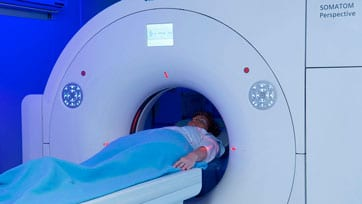

TOMOGRAFÍA
La Tomografía Computada, más comúnmente conocida como TC o TAC, es un examen médico de Diagnóstico por Imágenes que utiliza Rayos X y produce múltiples imágenes del interior del cuerpo. Las imágenes de secciones transversales generadas se pueden reformatear en múltiples planos, e incluso se pueden generar imágenes tridimensionales. El perfeccionamiento en la tecnología de detectores permite obtener imágenes con cortes múltiples en una sola rotación llamados “TC Multidetector” en menor tiempo y con resultados más detallados.
¿Para qué sirve la Tomografía?
La Tomografía Computada puede ser solicitada por el médico para: Identificar lesiones internas o sangrado interno; poder realizar un diagnóstico sobre trastornos musculares u óseos, tales como tumores o fracturas; encontrar la ubicación de alguna infección, coágulo sanguíneo o tumor; detección de enfermedades y afecciones, tales como enfermedades cardíacas, pulmonares, cáncer y tumores de hígado; ayudar en los distintos procedimientos médicos, ya sean cirugías, biopsias o radioterapia y contribuir en el seguimiento y efectividad de los diversos tratamientos médicos.
Sacar turno